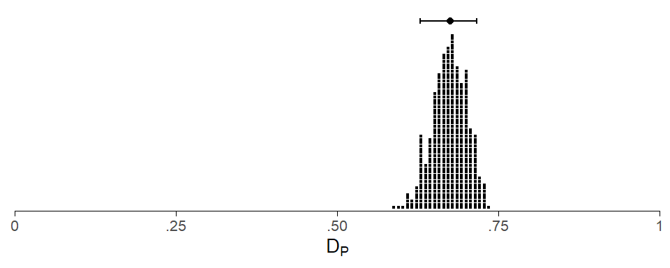
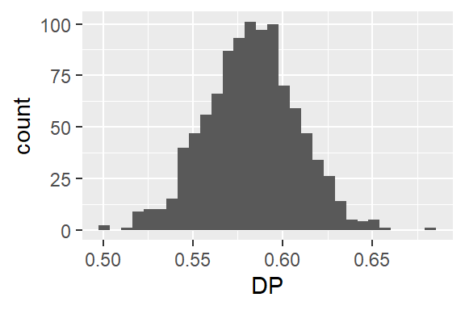

![]()
R setup
# install development version directly from Github
#pak::pak("lsoenning/tlda")
#pak::pak("lsoenning/uls")
library(tlda) # for access to datasets
library(tidyverse) # for data wrangling
library(uls) # for plotting themes{tlda} package in R.
# install development version directly from Github
#pak::pak("lsoenning/tlda")
#pak::pak("lsoenning/uls")
library(tlda) # for access to datasets
library(tidyverse) # for data wrangling
library(uls) # for plotting themesBootstrapping is a resampling method that has many different uses in data analysis. One of its key functions is to aid in the construction of confidence intervals. For helpful introductions to the use of bootstrapping in corpus linguistics, see Egbert and Plonsky (2020) and Gries (2022).
In dispersion analysis, bootstrapping can be used to assess the statistical uncertainty surrounding a dispersion returned by our analysis. This information is provided by a confidence interval (CI). As there is no statistical theory that would permit us to mathematically construct CIs for any of the commonly used parts-based dispersion indices, we need to rely on bootstrapping as a work-around strategy.
The technique works as follows. We draw a large number of bootstrap samples (say, 800) from the original data and then calculate, for each bootstrap sample, the quantity of interest (e.g. a dispersion score). This yields a distribution of bootstrap estimates. Each bootstrap sample has the same size as the original data and is obtained by randomly sampling with replacement from the original data. This means that some observations will occur multiple times in the bootstrap sample while others will not appear at all in it.
The distribution of the bootstrap estimates reflects the statistical variation associated with the sample statistic of interest. The average (mean or median) of this distribution is sometimes referred to as the bootstrap estimator. A percentile bootstrap confidence interval is then obtained by finding the appropriate quantiles of the distribution: For a 90% percentile bootstrap CI, we locate the .05 and the .95 quantile of the distribution, which enclose the middle 90% of the bootstrap estimates.
In general, the resampling scheme that is used to sample from the original data with replacement should align with the data-generating process. In corpus linguistics, this means that the resampling units should correspond to the sampling units in corpus compilation. These are the text files and speakers making up the corpus. Thus, corpus construction usually starts with a sampling frame, which delineates the range (and proportional share) of text categories, socio-demographic strata, or language varieties in general that the corpus is meant to represent. Then, within each category, texts, text excerpts, or speakers are selected or (randomly) sampled. Since the bootstrapping scheme should generally be coherent with the original sampling scheme, bootstrapping corpus data usually involves resampling texts, text files, or speakers (see Gries 2022).
For dispersion analysis, this means that it should always be these kinds of units (or corpus parts) that are selected with replacement. If it is across these units that dispersion is measured, bootstrapping is particularly straightforward. If corpus parts represent higher-level categories such as registers, genres, or socio-demographic groups, the bootstrapping procedure becomes a bit more complex. We will deal with both scenarios in turn.
When measuring dispersion across texts within a single text category, we learn about the generality of the item in this domain of language use (see this blog post). In this analysis setting, bootstrapping is simple. This is because, within a specific text category, corpus compilation can be considered as proceeding by simple random sampling: Each unit in the population has the same probability of being selected. Bootstrap samples are therefore drawn in the same way: By simple random sampling (with replacement) from the pool of text files in the data. This most basic type of bootstrap sampling is sometimes called case resampling.
Let us consider, as an example, the item thirteen in the Spoken BNC2014. There are 668 speakers in this corpus, and speakers will be our corpus parts. We measure dispersion using Gries’s (2008) deviation of proportions (specifically, the modification proposed by Egbert, Burch, and Biber 2020). Scores will be scaled the conventional way, with 0 representing a maximally uneven, and 1 a maximally even distribution.
We will draw 500 bootstrap samples, with each being drawn randomly with replacement from the pool of 668 speakers. Recall the each bootstrap sample consists of 668 “speakers”, where a considerable number of individuals will appear (i) multiple times or (ii) not at all in the bootstrap sample. The figure below shows the distribution of the 500 bootstrap estimates for DP.
set.seed(2025)
DP_boot <- disp_DP_boot(
subfreq = biber150_spokenBNC2014[130,],
partsize = biber150_spokenBNC2014[1,],
freq_adjust = TRUE,
n_boot = 500,
return_distribution = TRUE,
print_score = FALSE
)
Based on 500 bootstrap samples (random sampling with replacement)
Dispersion score is the median over the 500 bootstrap samples
Unweighted estimate (all corpus parts weighted equally)
The dispersion score is adjusted for frequency using the min-max
transformation (see Gries 2024: 196-208); please note that the
method implemented here does not work well if corpus parts differ
considerably in size; see vignette('frequency-adjustment')
For 0 bootstrap samples, the frequency-adjusted score exceeds the limits
of the unit interval [0,1]; these scores were replaced by 0 or 1
Scores follow conventional scaling:
0 = maximally uneven/bursty/concentrated distribution (pessimum)
1 = maximally even/dispersed/balanced distribution (optimum)
Computed using the modification suggested by Egbert et al. (2020)data.frame(
DP = DP_boot) |>
ggplot(aes(
x = DP)) +
geom_dotplot(method = "histodot",
binwidth = .007,
dotsize = .6,
stackratio = 1.2) +
scale_x_continuous(limits = c(0,1), expand = c(0,0),
labels = c("0", ".25", ".50", ".75", "1")) +
scale_y_continuous(limits = c(0, 1.1), expand = c(.005, .005)) +
annotate("point", x = median(DP_boot), y = 1.05) +
annotate("errorbar",
xmin = quantile(DP_boot, .05),
xmax = quantile(DP_boot, .95),
y = 1.05, width = 0.03) +
theme_dotplot() +
xlab(expression(D[P]))
Above the pile of dots, a filled circle marks the median of this distribution, and the error bars extend from the .05 to the .95 quantile of the distribution, marking a 90% percentile bootstrap CI.
When dispersion is measured across text categories, the goal is to quantify the register-specificity of an item (see this blog post). At this level of analysis, the corpus parts no longer coincide with the sampling units. Since it is preferable for bootstrapping to mimic the data-collection procedure as closely as possible, we need to resort to a different sampling scheme. The variant we will adopt is referred to as stratified bootstrapping. This resampling scheme takes into account the way in which the texts are organized, which means that it draws on those variables that informed data collection. A helpful blog post on stratified bootstrapping can be found here.
Before we go further, we should note that it does not make sense, in general, to resample text categories (i.e. sub-corpora). This is because text categories are (usually) not sampled during corpus compilation. Instead, they are delineated prior to data collection, sometimes in the form of a sampling frame.
In keeping with corpus creation, then, we must resample text files using what is referred to as stratified bootstrapping. The text categories then form the strata, and a bootstrap sample is composed of subsamples, one per stratum. From within each text category, text files are then drawn randomly with replacement.
To illustrate, let’s assume our corpus consists of four genres (A, B, C, and D), which form the corpus parts for a dispersion analysis:
For a stratified bootstrap sample, observations are randomly sampled (with replacement) within each stratum (here: sub-corpus). The number of observations sampled from each stratum is equal to its size. A bootstrap sample therefore looks as follows:
To measure dispersion across the four genres, the bootstrap sample must then be aggregated: For each corpus part (i.e. genre), the subfrequency and partsize are determined by summing the relevant counts across all text files that ended up in the respective bootstrap subsample. The dispersion score is calculated based on these aggregated tallies, to obtain the bootstrap estimate for this bootstrap sample.
In general, dispersion analysis needs to resort to stratified (instead of simple) bootstrapping if the corpus parts represent higher-level categories, above the level of the sampling units (texts and speakers). We can therefore safely talk about corpus parts (instead of strata), which simplifies the terminology.
The {tlda} package includes a set of functions suffixed by _boot, which implement simple bootstrapping. To repeat the analysis of thirteen in the Spoken BNC2014, we use the function disp_DP_boot(). The item is sitting in row 130 of the term-document matrix biber150_spokenBNC2014 (available in the {tlda} package). We supply the following arguments:
n_boot = 1000 for increasing the number of bootstrap samples (default: 500)boot_ci = TRUE for a percentile bootstrap confidence intervalconf_level = .90 for a 90% CI (default: 95%)disp_DP_boot(
subfreq = biber150_spokenBNC2014[130,],
partsize = biber150_spokenBNC2014[1,],
n_boot = 1000,
boot_ci = TRUE,
conf_level = .90
) DP conf.low conf.high
0.5860616 0.5393471 0.6275054
Based on 1000 bootstrap samples (random sampling with replacement)
Median and 90% percentile confidence interval limits
Unweighted estimate (all corpus parts weighted equally)
For 0 bootstrap samples, the frequency-adjusted score exceeds the limits
of the unit interval [0,1]; these scores were replaced by 0 or 1
Scores follow conventional scaling:
0 = maximally uneven/bursty/concentrated distribution (pessimum)
1 = maximally even/dispersed/balanced distribution (optimum)
Computed using the modification suggested by Egbert et al. (2020)We can also instruct the function to return the bootstrap estimates:
return_distribution = TRUE to obtain the distribution of bootstrap estimatesprint_score = FALSE to stop the function from printing all 1,000 estimates to the consoleverbose = FALSE to suppress the information print-out (which is identical to the one above)DP_distribution <- disp_DP_boot(
subfreq = biber150_spokenBNC2014[130,],
partsize = biber150_spokenBNC2014[1,],
n_boot = 1000,
return_distribution = TRUE,
print_score = FALSE,
verbose = FALSE
)We can then graph this distribution:
data.frame(
DP = DP_distribution) |>
ggplot(aes(
x = DP)) +
geom_histogram()
The function disp_DP_sboot() in the {tlda} package implements stratified bootstrapping. For illustration, let us consider the item methods in the Brown Corpus. We will look at its dispersion across the genres (n = 15) in the corpus. To implement this scheme, we need the following pieces of information about each text file in the corpus:
Relevant text-level tallies are available in row 87 of the data set biber150_brown:
t(biber150_brown[c(1,87),1:10]) word_count methods
A01 2242 0
A02 2277 2
A03 2275 0
A04 2216 0
A05 2244 0
A06 2263 0
A07 2270 1
A08 2187 0
A09 2234 0
A10 2282 2What is missing, however, is information about genre, i.e. the corpus parts across which we want to measure dispersion. Metadata for the Brown Corpus is available in the dataset metadata_brown in the {tlda} package:
str(metadata_brown)'data.frame': 500 obs. of 4 variables:
$ text_file : chr "A01" "A02" "A03" "A04" ...
$ macro_genre: Ord.factor w/ 4 levels "press"<"general_prose"<..: 1 1 1 1 1 1 1 1 1 1 ...
$ genre : Ord.factor w/ 15 levels "press_reportage"<..: 1 1 1 1 1 1 1 1 1 1 ...
$ word_count : int 2258 2242 2277 2275 2216 2244 2263 2270 2187 2234 ...The following code adds genre information to the text-level tallies above:
d <- data.frame(t(biber150_brown[c(1,87),]))
d$text_file <- rownames(d)
d <- full_join(
d,
metadata_brown[,-4],
by = "text_file")Let’s see whether this was successful:
str(d)'data.frame': 500 obs. of 5 variables:
$ word_count : num 2242 2277 2275 2216 2244 ...
$ methods : num 0 2 0 0 0 0 1 0 0 2 ...
$ text_file : chr "A01" "A02" "A03" "A04" ...
$ macro_genre: Ord.factor w/ 4 levels "press"<"general_prose"<..: 1 1 1 1 1 1 1 1 1 1 ...
$ genre : Ord.factor w/ 15 levels "press_reportage"<..: 1 1 1 1 1 1 1 1 1 1 ...Now we are good to go. Here is a brief run-down of the ensuing analysis:
We use the function disp_DP_sboot() bootstrap Gries’ deviation of proportions:
text_freq: the number of times the item occurs in each texttext_size: the length of the text filescorpus_parts: the corpus parts for the dispersion analysis (and strata for stratified resampling)disp_DP_sboot(
text_freq = d$methods,
text_size = d$word_count,
corpus_parts = d$genre,
n_boot = 1000,
boot_ci = TRUE,
freq_adjust = TRUE,
formula = "egbert_etal2020",
directionality = "conventional"
)DP_nofreq conf.low conf.high
0.6221049 0.5370112 0.6970551
Based on 1000 stratified bootstrap samples (sampled with replacement)
Median and 95% percentile confidence interval limits
Unweighted estimate (all corpus parts weighted equally)
The dispersion score is adjusted for frequency using the min-max
transformation (see Gries 2024: 196-208); please note that the
method implemented here does not work well if corpus parts differ
considerably in size; see vignette('frequency-adjustment')
For 0 bootstrap samples, the frequency-adjusted score exceeds the limits
of the unit interval [0,1]; these scores were replaced by 0 or 1
Scores follow conventional scaling:
0 = maximally uneven/bursty/concentrated distribution (pessimum)
1 = maximally even/dispersed/balanced distribution (optimum)
Computed using the modification suggested by Egbert et al. (2020)@online{sönning2025,
author = {Sönning, Lukas},
title = {Bootstrapping Dispersion Measures},
date = {2025-11-18},
url = {https://lsoenning.github.io/posts/2025-11-15_bootstrapping_dispersion/},
langid = {en}
}